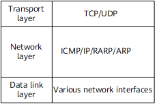

IPv4 is the core protocol in the TCP/IP protocol suite. The IPv4 protocol suite includes Address Resolution Protocol (ARP), Reverse Address Resolution Protocol (RARP), ICMP, TCP, and UDP.

As shown in Figure 1, ARP and RARP work between the data link and network layers for address resolution. ICMP works between the network and transport layers to ensure the correct forwarding of IP datagrams.
ARP maps an IP address to a MAC address, and can be implemented in dynamic or static mode. ARP provides some extended functions, such as gratuitous ARP, ARP security, and ARP-Ping.
RARP maps a MAC address to an IP address.
ICMP works at the network layer to ensure the correct forwarding of IP datagrams, and allows hosts or devices to report errors during datagram transmission. An ICMP message is encapsulated in an IP datagram as the data, and forms a complete IP datagram together with an IP header.